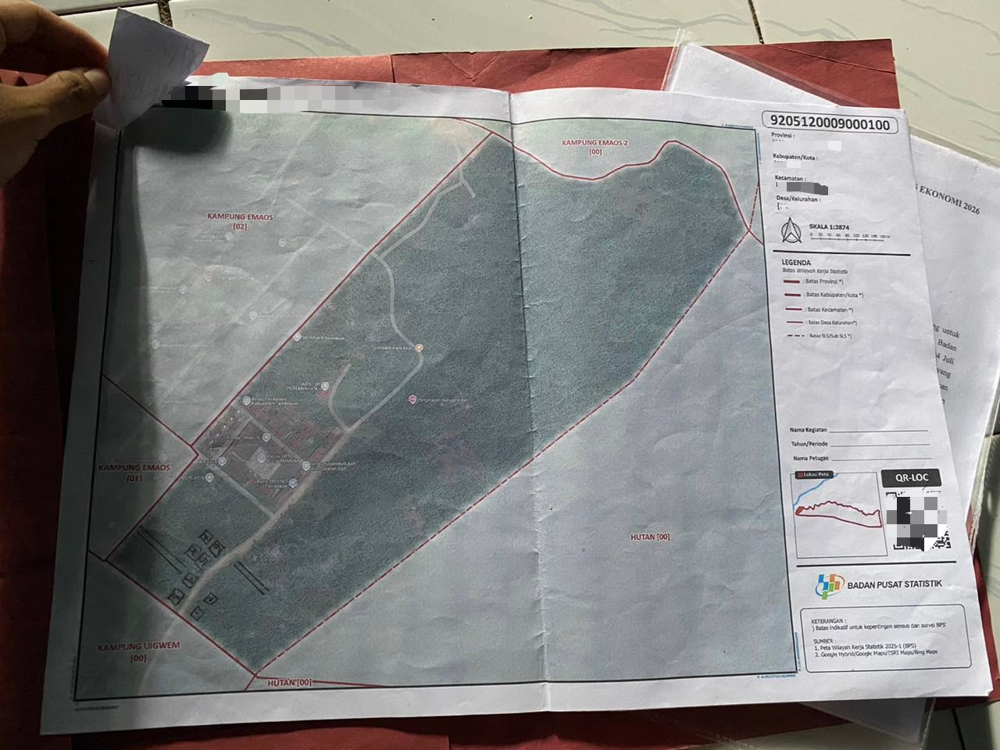
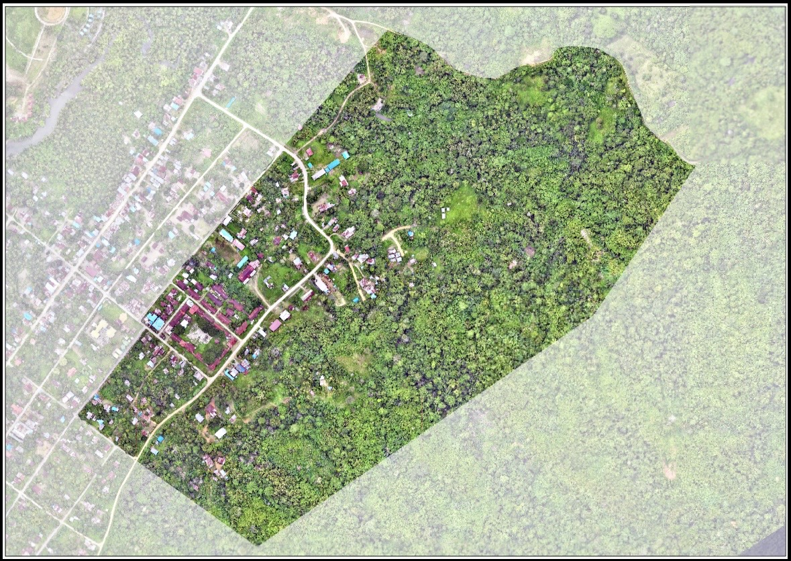
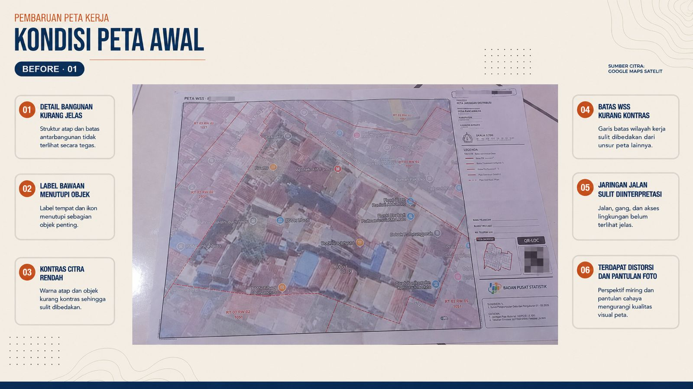
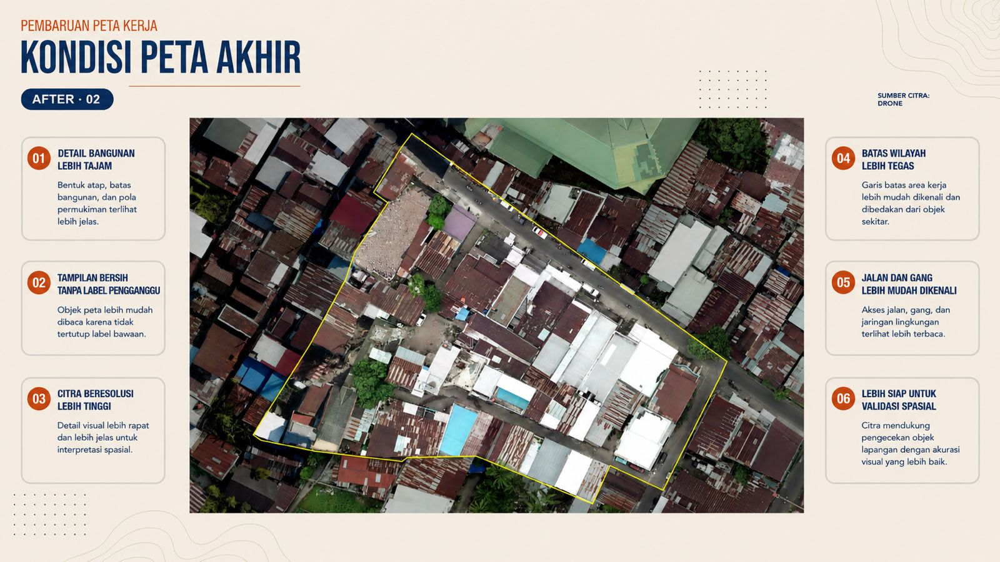
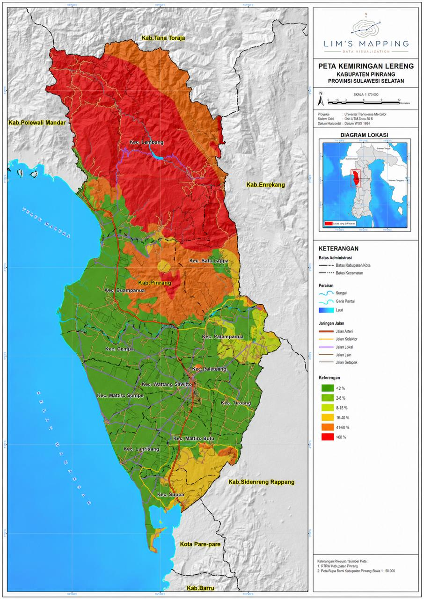
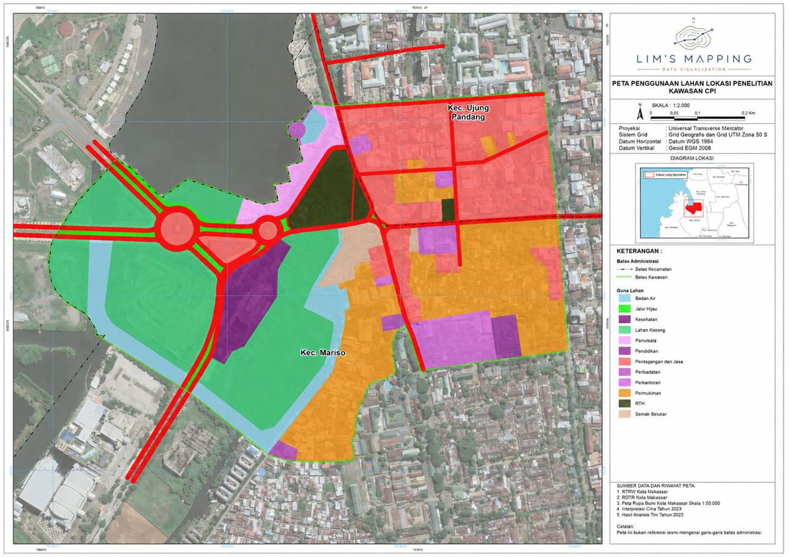
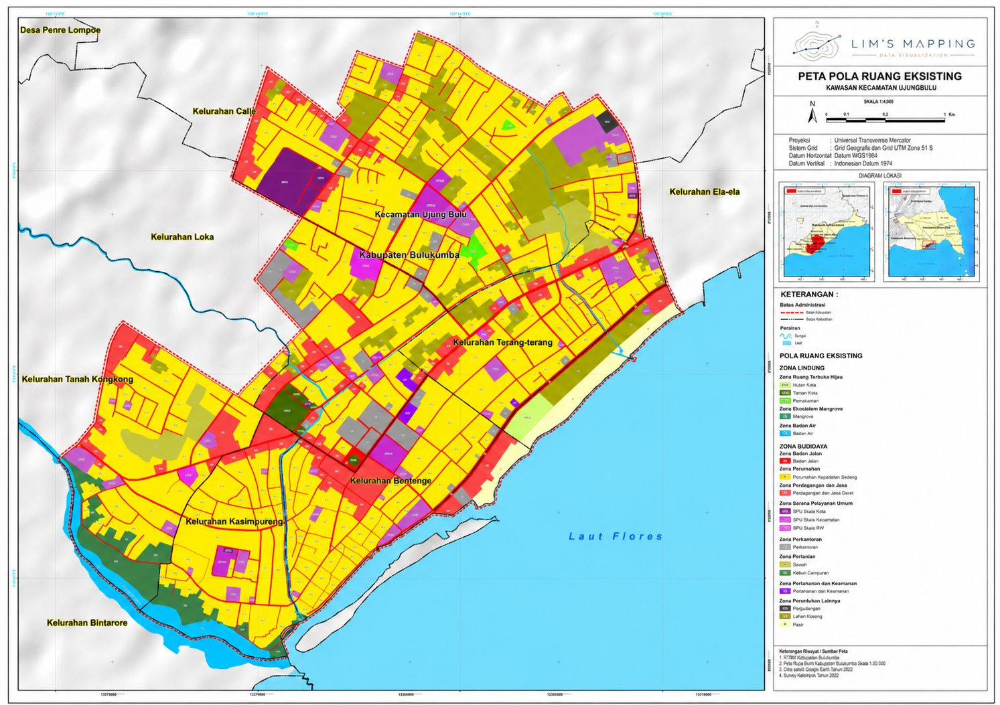
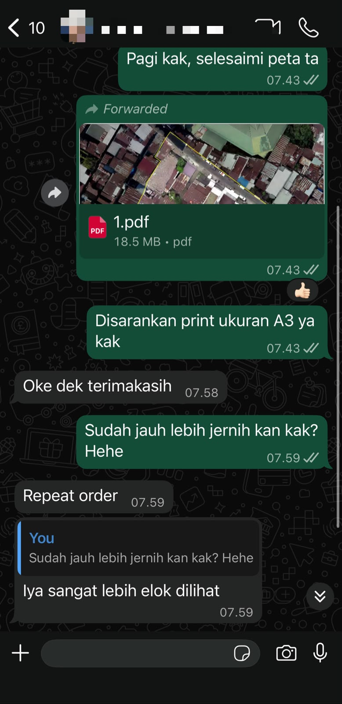

Pendampingan Proyek yang Personal
Setiap proyek ditangani secara langsung dengan komunikasi yang jelas, responsif, dan terarah.
Lim’s Mapping membantu mengolah koordinat, citra, dan data lapangan menjadi peta yang terstruktur, mudah dipahami, dan siap digunakan.

Setiap proyek ditangani secara langsung dengan komunikasi yang jelas, responsif, dan terarah.
Berpengalaman dalam pemetaan, digitasi, pengolahan data, dan visualisasi geospasial.
Hasil disiapkan dalam format dan tingkat detail yang menyesuaikan tujuan penggunaan proyek.
01 / Portofolio Terpilih
Dua studi kasus utama yang menunjukkan peningkatan kualitas data, ketajaman visual, kelengkapan objek, dan keterbacaan informasi melalui proses pembaruan serta penyempurnaan peta.


Pembaruan Data Spasial
Perbandingan menunjukkan lebih banyak bangunan dan objek wilayah yang berhasil diidentifikasi menggunakan referensi yang lebih mutakhir.


Penyempurnaan Peta Wilayah Sensus
Peta kerja salah satu wilayah Sensus Ekonomi 2026 di Kota Makassar disempurnakan agar detail, batas, simbol, dan label lebih jelas.
Portofolio Lainnya
Pemetaan Lahan
Koordinat dan Batas
Menampilkan bentuk bidang, posisi patok, koordinat, dan luas area secara terstruktur.
 Analisis Sebaran
Analisis Sebaran
Visualisasi Spasial
Titik lokasi disusun menjadi visual yang membantu pembacaan konsentrasi dan jangkauan.

Analisis TopografiKemiringan Lereng
Kondisi topografi divisualisasikan untuk membantu evaluasi dan perencanaan lahan.

Penggunaan LahanPemanfaatan Ruang
Persebaran permukiman, fasilitas, jalan, dan fungsi kawasan ditampilkan secara terstruktur.

Analisis Tata RuangPola Ruang Eksisting
Hubungan antarfungsi kawasan ditampilkan sebagai referensi evaluasi tata ruang.
02 / Tentang Lim’s Mapping
Lim’s Mapping menyediakan layanan pemetaan dan pengolahan data spasial untuk kebutuhan analisis, dokumentasi, perencanaan, dan penyajian informasi wilayah.
Setiap proyek dikerjakan melalui pemeriksaan data, pengolahan spasial, penyusunan visual, serta peninjauan hasil agar output yang dihasilkan sesuai dengan tujuan penggunaannya.
03 / Layanan
Empat kelompok layanan utama untuk mengubah data lokasi menjadi informasi visual yang lebih jelas.
Pengolahan koordinat, delineasi area, serta penyajian batas wilayah atau bidang lahan.
Mengubah peta lama atau data mentah menjadi data spasial yang lebih rapi dan relevan.
Penyajian pola sebaran, penggunaan lahan, topografi, dan informasi spasial lainnya.
Penyusunan peta untuk laporan, presentasi, dokumentasi, publikasi, dan kebutuhan cetak.
Studi Kasus Utama
Geser pembatas pada setiap perbandingan untuk melihat perbedaan antara peta sebelum dan sesudah pembaruan.
Pembaruan Data dan Visual
Perbandingan peta sebelum dan sesudah pembaruan menunjukkan lebih banyak bangunan dan objek wilayah yang berhasil diidentifikasi. Referensi yang lebih mutakhir menghasilkan peta yang lebih lengkap, tajam, dan relevan untuk mendukung kebutuhan lapangan.
Sebelum Pembaruan
Ketajaman visual masih terbatas dan sejumlah bangunan serta perubahan kondisi wilayah belum tergambarkan secara lengkap.
Setelah Pembaruan
Referensi yang lebih mutakhir membantu menampilkan bangunan, jaringan jalan, batas wilayah, dan objek penting secara lebih lengkap.
Pembaruan menggunakan referensi terbaru yang tersedia untuk proyek.
Lebih banyak bangunan dan unsur wilayah berhasil dikenali serta divisualisasikan.
Detail peta lebih jelas sehingga informasi lebih mudah dibaca dan digunakan.
Penyempurnaan Peta Wilayah Sensus
Peta kerja salah satu wilayah Sensus Ekonomi 2026 di Kota Makassar disempurnakan melalui penataan ulang detail bangunan, batas wilayah, simbol, label, dan komposisi visual. Hasil akhir menyajikan informasi yang lebih tajam, konsisten, dan mudah digunakan sebagai referensi kerja.
Sebelum Penyempurnaan
Detail visual masih kurang tajam, hierarki informasi belum konsisten, dan sejumlah elemen sulit dikenali dengan cepat.
Setelah Penyempurnaan
Detail bangunan, batas wilayah, simbol, dan label disusun kembali agar tampil lebih jelas, konsisten, dan mudah dibaca.
Bentuk dan posisi elemen utama lebih mudah dikenali pada peta hasil.
Delineasi dan garis batas disajikan dengan hierarki visual yang lebih konsisten.
Simbol, label, peta, dan poin penjelasan ditata agar seluruh informasi tetap terlihat.
04 / Output Proyek
Jenis file dan kelengkapan output ditentukan berdasarkan ruang lingkup pekerjaan serta kesepakatan awal.
File siap untuk laporan, presentasi, dokumentasi, atau kebutuhan cetak.
SHP, KML, GeoJSON, atau format lain sesuai ruang lingkup proyek.
Judul, legenda, skala, arah utara, dan sumber data.
Disesuaikan dengan lokasi, data, dan tujuan penggunaan.
Jumlah dan ruang lingkup mengikuti kesepakatan awal.
Sumber data dan informasi pengolahan dapat dicantumkan pada hasil.
05 / Cara Kerja
Setiap proyek dikerjakan melalui tahapan yang terstruktur, mulai dari pembahasan kebutuhan dan pemeriksaan data hingga penyusunan, peninjauan, dan penyerahan hasil akhir.
Tahap Pertama
Tujuan, lokasi proyek, konteks penggunaan, format hasil, dan tenggat dibahas sejak awal.
Tujuan proyek, lokasi, contoh referensi, format hasil, dan tenggat waktu.
Ruang lingkup, kebutuhan data, metode, serta estimasi pengerjaan awal.
Tahap Kedua
File, atribut, koordinat, kualitas referensi, dan kebutuhan pelengkap diperiksa.
Excel koordinat, KML, SHP, GeoJSON, citra, gambar peta, atau dokumen pendukung.
Status kelengkapan data, sistem koordinat, dan rencana pengolahan.
Tahap Ketiga
Data diolah, dianalisis, dan disusun menjadi draft peta untuk diperiksa.
Data yang telah diperiksa, prioritas informasi, dan referensi tampilan.
Draft peta, catatan pemeriksaan, dan penyesuaian sesuai kesepakatan revisi.
Tahap Keempat
File akhir diperiksa, dirapikan, lalu dikirim dalam format yang disepakati.
Persetujuan draft, format akhir, dan kebutuhan file pendukung.
File final yang siap digunakan beserta data pendukung sesuai ruang lingkup.
06 / Testimoni Klien
Testimoni berasal dari percakapan asli setelah hasil pemetaan diterima. Informasi pribadi disamarkan untuk menjaga privasi.

07 / Pertanyaan Umum
Jawaban singkat mengenai data, format hasil, waktu pengerjaan, revisi, dan kerahasiaan proyek.
Data dapat berupa koordinat, Excel, gambar peta, citra, KML, SHP, GeoJSON, dokumen pendukung, atau informasi lokasi yang tersedia.
Ya. Pengiriman data, diskusi, pemeriksaan hasil, revisi, dan penyerahan file dapat dilakukan secara daring.
Hasil dapat berupa PDF, JPEG, KML, SHP, GeoJSON, atau format lain sesuai kebutuhan dan kesepakatan proyek.
Durasi bergantung pada luas wilayah, kelengkapan data, jenis analisis, tingkat kerumitan, tenggat, dan jumlah revisi.
Revisi tersedia sesuai jumlah dan ruang lingkup yang disepakati sebelum pengerjaan.
Data digunakan untuk kebutuhan pengerjaan dan tidak dipublikasikan tanpa persetujuan klien.
Konsultasi Proyek
Kirim informasi awal proyek untuk mendapatkan arahan kebutuhan data, bentuk output, dan estimasi.
{kind=link}
{kind=link}
{kind=link}
{kind=link}